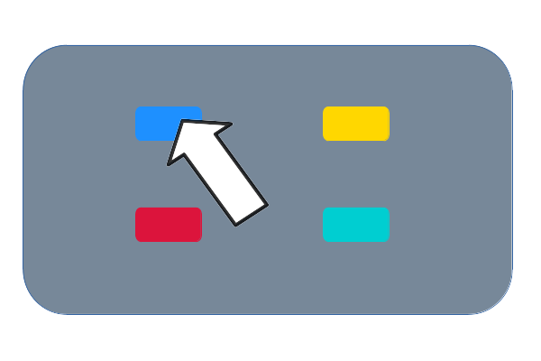
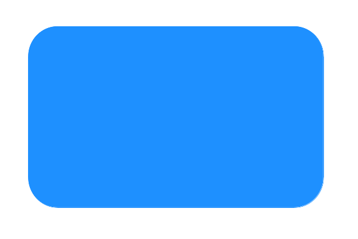
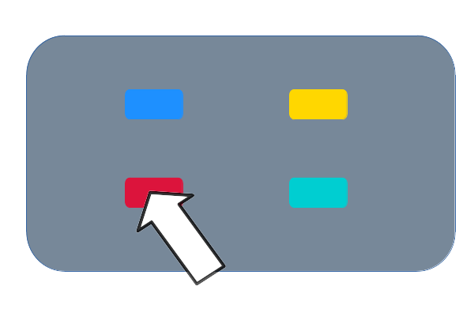
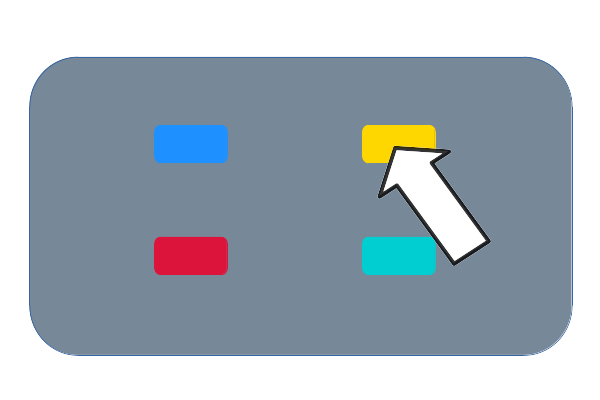
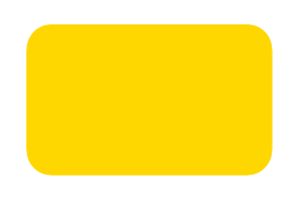
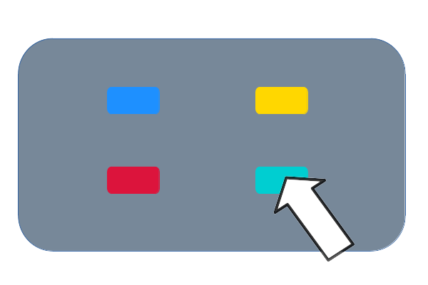
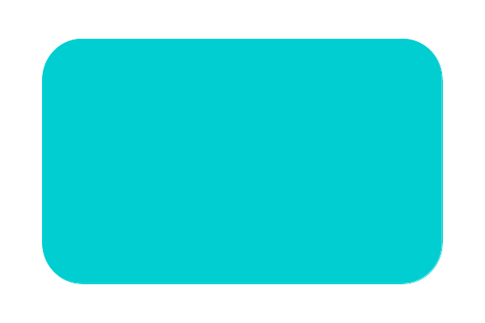
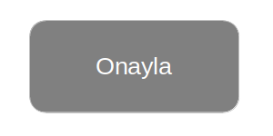
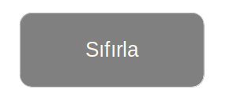

Master Mind Oyunu Nasıl Oynanır?
Bu sayfada Master Mind oyununu nasıl oynayacağınız hakkında bilgiler bulabilirsiniz.
Master Mind oyununda 4 kutu için farklı renkler rastgele olarak belirlenir ancak bunlar sizden gizlenmektedir. Siz kutuların renklerini belirleyip cevabınızı onayladığınızda, kaç doğru rengi doğru yerinde belirlediğinizi, ve kaç tane yanlış yerde de olsa doğru renk bildiğinizi cevabın sağında görüntülenen sayılar aracılığıyla öğrenirsiniz.
-
Oyunu oynamak için öncelikle renk butonlarını kullanmanız gerekiyor.
Mavi butona basarsanız kutu rengi mavi olur, cevabınız için kutu rengini belirlemiş olursunuz.
Kırmızı butona basarsanız kutu rengi kırmızı olur, cevabınız için kutu rengini belirlemiş olursunuz.
Sarı butona basarsanız kutu rengi sarı olur, cevabınız için kutu rengini belirlemiş olursunuz.
Turkuaz butona basarsanız kutu rengi turkuaz olur, cevabınız için kutu rengini belirlemiş olursunuz.
 -
Cevabınızı onaylamak için Onayla butonunu kullanmanız gerekiyor.
Onayla butonuna basarsanız cevabınız için seçtiğiniz renklerle birlikte bir cevap hakkınızı kullanmış olursunuz.
Onayla butonuna bastiktan sonra cevabınız bir alt satırda görünmeye başlar. Sağ taraftaki rakamların ilki kaç tane doğru rengi doğru yerde bildiğinizi belirtir. Sağ taraftaki sayılardan ikincisi doğru yerde olsa da olmasa da kaç tane doğru renk bildiğinizi gösterir.
-
Cevabınızdan vazgeçmek için Sıfırla butonunu kullanmanız gerekir.
Cevap denemenizdeki renk seçimlerinizin sıfırlanması ve tüm butonların yeniden görünür hale gelmesi için Sıfırla butonunu kullanabilirsiniz.
Sıfırla butonuna bastıktan sonra onaylanmamış cevabınızın seçtiğiniz renklerden vazgeçip, renk butonlarını tekrar görünür hale getirirsiniz.
-
Oyunu bitirmek ve asıl çözümü görmek için Oyunu Bitir ve Çözümü göster butonuna basarsınız.
Oyuna devam etmekten vazgeçip çözümü merak ettiğinizde, tahmin etmeniz gereken cevabın ne olduğunu Oyunu Bitir ve Çözümü Göster butonu sayesinde görebilirsiniz.
-
Yeni bir oyun başlatmak istediğinizde Oyunu Yeniden Başlat butonunu kullanabilirsiniz.
Tahmin etmeniz gereken cevabın değişmesini istediğinizde, yani oyunu yeniden başlatmak için Oyunu Yeniden Başlat düğmesini kullanırsınız.